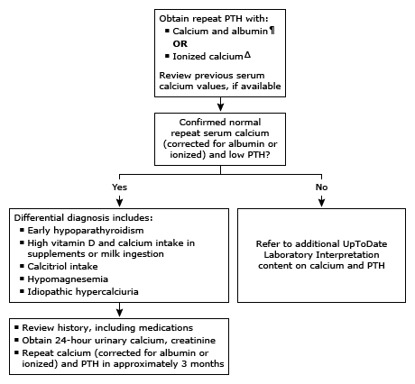

Initial evaluation of normal serum calcium and low parathyroid hormone in adults*

This algorithm is intended for use with additional UpToDate content on hypercalcemia and hypocalcemia.
PTH: parathyroid hormone. * The normal range for serum calcium is approximately 8.6 to 10.2 mg/dL (2.15 to 2.54 mmol/L) and for intact PTH approximately 10 to 65 pg/mL (1.1 to 6.9 pmol/L). Interpretation of a specific abnormal test result should be based upon the reference range reported with that result. ¶ In patients with hypo- or hyperalbuminemia, the measured calcium concentration should be corrected for the abnormality in albumin. Δ Ionized calcium is preferred if there is suspicion of an acid-base disorder (eg, critically ill or postsurgical patient).